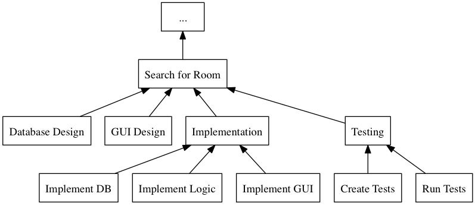
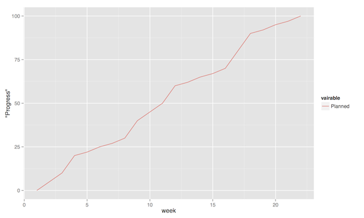
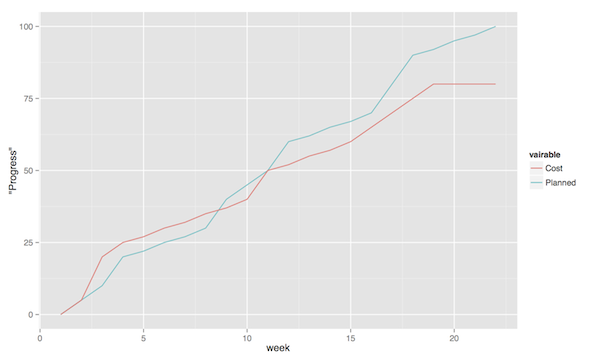
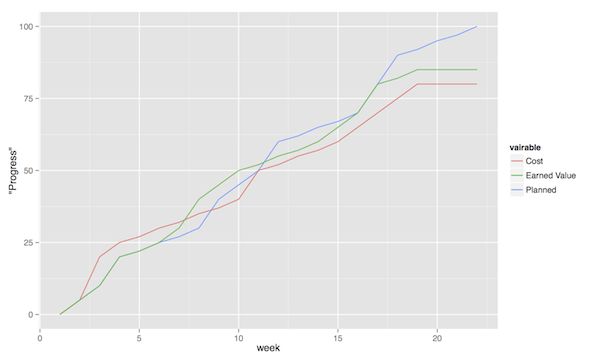
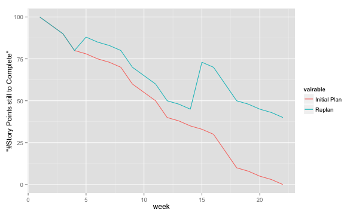
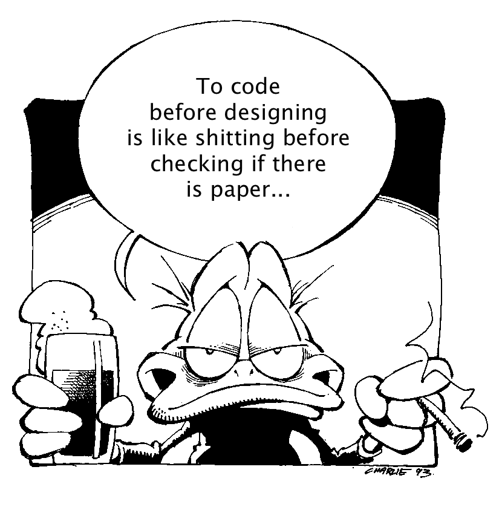
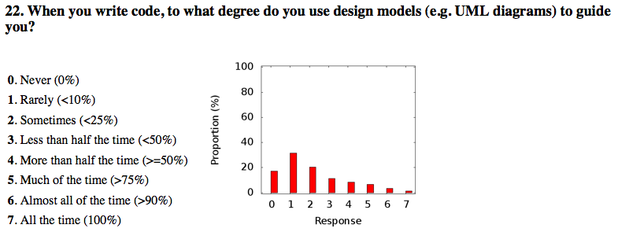

Development Methodologies
Table of Contents
1 About This Sprint
This sprint introduces different development methodologies. It is primarily targeted at PA1415 Software Design.
2 User Stories covered in this Sprint
- As a project manager I want to plan the project so that I can make the best use of my resources.
- As a project manager I need to decide what to focus on building right now so that I best satisfy all customers’ expectations.
- As a project manager I want to track the project so that I can see what the current status is.
- As a project manager I want to track the project so that I can forecast whether we will deliver on time or not.
- As a software designer I want to document my design in a standardised format so that I can communicate it to other software engineers.
3 Introduction
In this sprint, we focus on a couple of issues surrounding the development process. First of all, there are a number of choices of which developent process to use, from the intuitively easy to grasp waterfall process to the highly individualised kanban process. Which process type to use depends to some extent on the product you are trying to build, but perhaps more so on which organisation you have. Basically, with stable development teams and fairly stable requirements, you can perhaps do an iterative or incremental project, but the more user interaction, continuously changing requirements, and staff turnover you expect, your organisation will tend to move towards more agile processes. There is also a lot of hype involved here. Companies that do agile are perceived as more modern, hip, and better.
Most processes internally follow a waterfall course of events, with planning, requirements engineering, analysis and design, implementation, testing, deployment, and evaluation. The differences boil down to the amount of work that one iteration takes on, the size of the development teams, and the length of each iteration. Again, in agile there are also a lot of buzzwords added, but that’s essentially it. So simple, and yet so powerful. You see, as the scope and timespan for each iteration is reduced (down to weeks or even days), you get quicker feedback loops. You develop much less before you get feedback on what you have done. You also need to be smarter with what you develop so that you can get the most important feedback first.
This is where the concept of a Minimum Viable Product comes in. A minimum viable product, or an MVP, is a product that supports an entire end to end flow. For example, if you are building a hotel booking system, the MVP may be a product that allows you to search and book one single room. Logging in, booking double rooms with extra beds, adding a minibar, room payment, etc. comes later. Searching for and booking a single room means you have some user interface in place, you have a database structure, and you have some architecture with a structure for how to name API endpoints.
3.1 Project Planning and Tracking
Once you have decided which development methodology to use, you need to plan your project. You have already decided if you are going to do all analysis before all design or whether you are going to do the full analysis-design-implement-test chain for each feature in your system. But when are you going to do what, and who is going to do what. You may, for example, have some persons in your project that are specialised on user interfaces, on databases, or on exploratory testing. So you need to plan every person and every part of the process.
The first step of planning is to break down each task into smaller, more manageable tasks. For example, the task “Search for Room” in the hotel management system mentioned above, may consist of the tasks “database design”, “GUI design”, “implementation”, and “testing”. Each of these tasks are easier to estimate the size and difficulty of than the overall task. You can also now start assigning different parts of this task to different people, if you like. This breakdown is usually referred to as a Work Breakdown Structure, or a WBS. It is often graphically represented as a tree (see Figure 1), but may just as well be represented as several columns in a spreadsheet (see Table 1).

Figure 1: An example of a graphical representation of a part of a WBS.
| Feature Group | Feature | Tasks | Sub-Tasks |
|---|---|---|---|
| … | Search for Room | Database Design | |
| GUI Design | |||
| Implementation | Implement DB | ||
| Implement Logic | |||
| Implement GUI | |||
| Testing | Create Tests | ||
| Run Tests |
Having the data in a spreadsheet format makes it (IMHO) easier to work with, and also enables you to easily add more columns with data on who is responsible for the task, your effort estimations, your current status, etc. Essentially, you have the starting point for easily creating a GANTT chart.
GANTT charts visualise your project in terms of activities and calendar dates, but you may just as well add more information to it to make it a full-fledged project tracking tool. For example, a simple format is to include the following information (Table 2).
| Task Name | Estimated Effort (in hours) | Start Date | End Date | Responsible | Spent Time | Progress (in percent) | Projected Effort | Over/Undertime | … And here starts the GANTT chart proper with one column per day |
|---|---|---|---|---|---|---|---|---|---|
| Example Task | 20 | 2016-01-01 | (Start Date) + (Estimated Effort)/(Length of Workday) |
Example Person | 12 | 50 | (spent time) / (progress) |
(estimated effort)-(projected effort) |
The discussion above focus on the work performed (or the planned work). In contrast, agile methodologies focus on the earned value, which gives a slightly different picture. Whereas you can use the information above to tell your boss whether you are on time or not, you are not able to say at a glance how happy this has made the customer, or how many features you have left to before you are done. For these purposes, we use Earned Value charts and Burn charts.
An Earned Value chart has three lines in it
- Planned Value
- How much of the estimated effort should have been completed at a specific point in time.
- Earned Value
- How much of the estimated effort was actually implemented at a specific point in time.
- Actual Cost
- How much effort was actually spent.
This is typically presented in a cumulative earned value chart (where the previous assessment period are added to the next, so that planned value end up at 100% at the far right of the chart. In Figures 2, 3, and 4 each of these lines are added. The x-axis represent the time, and the y-axis is some measure of value. This can be in hours, progress, pounds, story points, collected pokemons, or whatever makes sense for your project. Just make sure that it is a unit that is fixed a priori, and not something that will change throughout the project. For example, the number of lines of code (LOC) may seem a nice measure, but you know as well as I do that this will become larger than expected, and so you will end up not knowing how much more you need to write before the project is done (as opposed to as big as you initially expected it to be).
The planned value represent how much of the total value you plan on having done for each weeek (cumulative, so the difference in the amount of value added per week can only be seen by the differing slope of the line). If we add the actual cost (Figure 3, sorry that the colour of the lines change, I CBA to fix it right now), we can see that we are spending about as much resources as planned. Specifically, we are spending more than planned up until week 8, and after that we apparently come to grips with the project and continue spending less than planned. This graph shows the current state at week 18, which is why the actual costs flatline after that. Adding the eraned value, finally, gives the situation in Figure 4, where we see what we actually managed to deliver for the costs we invested. Up until week 8, we are delivering what is expected (the Earned value curve completely overlays the planned curve), but for a higher cost than expected. From week 8 to week 11, we are delivering more than expected. At best, we are one week ahead of schedule (the biggest horizontal difference between the Earned Value curve and the Planned Value curve). At week 11 we again slip behind shedule for a while, catching up in week 16 and 17, but then falling horribly behind schedule in week 18.

Figure 2: Earned Value Chart: Planned

Figure 3: Earned Value Chart: Adding Actual Cost

Figure 4: Earned Value Chart
So what we see in this type of chart is a quick and easy measure of whether we are using our resources as planned (is the actual cost above or below the planned value curve?), and whether we are ahead of, or behind the planned schedule (is the earned value curve above or below the planned value curve?). We can then quickly decide whether we should add more resources to the project. In the example in Figure 4 we obviously need to do something if we are going to deliver as expected, for example spending the resources we already have allocated to the project (the difference between planned value and actual cost curves).
A burndown chart essentially turns this chart upside down. Partially, this is done for psychological reasons; it is easier to see how much or how little remains), but more importantly it enables us to easily visualise what happens when we add more work in the middle of a project. Consider the example in Figure 5. The plan is that the project should be complete at week 22. However, at week 5 and week 15, more work is added to the project, so the number of story points still to complete goes up. This means that at week 22, there are still some forty-odd story points left to complete and the project is not done. This is just one example of how a burndown chart can be used to easily visualise the consequences of changing the scope mid-project. Agile development methodologies are not averse to changing the scope – rather the opposite – but they do insist on that the consequences are known and easily understood.

Figure 5: Burndown chart
3.2 Design Documentation

The last user story for this sprint is a bit of an oddball. What, one may wonder, does design documentation have to do with development methodologies. The reason for this is that the currently dominating design documentation format, the Unified Modelling Language (UML), also prescribes a certain way of doing the design, and a certain order for things to be done. This process is known as the Unified Process, or the Rational Unified Process (because the originators created the company Rational and wanted to make more money off everything around UML). The Unified Process claims to be agile (we can debate this in the classroom), and is iterative and incremental and whatever buzzword du jour. We are not going into detail about all of this in this course, and will focus almost solely on the analysis and design stages, but even here, or especially here the different UML diagrams prescribe a certain order, so that you may use what you learn in one diagram as input to creating the next diagram. Thus:
- We do Requirements Engineering (outside the scope of UML) to find out what the customers and other stakeholders expect from the system.
- We do UML Use Cases to document the requirements in the context of the processes they are going to be used, so that we can communicate with the stakeholders about them.
- We do UML Use Case Diagrams to get an overview of, and understand how the UML Use Cases fit together.
- We do a Conceptual Model based on the requirements and the use cases to understand the problem domain better.
- We do UML State Diagrams based on the requirements and the use cases to understand the dynamic behaviour better.
- We do UML System Sequence Diagrams to understand which system events are generated by each UML Use Case.
- We may do UML Design Contracts to understand how each system operation from the UML System Sequence Diagrams changes the state of the application and instances of domain concepts.
- We do UML Class Diagrams to understand which domain concepts are important to implement, and how to implement them and their relations.
- We do UML Interaction Diagrams to understand how objects (instances of the classes) interact to solve one particular system event from the UML System Sequence Diagrams.
- We revise the UML Class Diagrams based on the UML Interaction Diagrams we just did.
- We implement the system based on the UML Class Diagram and the UML Interaction Diagrams.
- We write test cases based on the UML use cases.
Remember earlier where I mentioned that UML/RUP claims to be agile? Please take a moment to reflect upon whether you are able to do this entire list and remain agile.
In 2014 a colleague of mine did a survey 1 among nearly 4000 professional software developers about their software development practices in general. One of the questions was the seemingly innocent /"Do you model?"/. Answers ranged from “no” to “hell no!”, as presented in Figure 7.

Figure 7: Survey Question and Answers
In the freetext answers a different story emerges:
The industrial software developers who answered the survey do use sketches, informal models, casual diagrams, etc, but not formal UML.
They were also allowed to provide a a further explanation to their answer. Common explanations were:
- “Only for very complex designs, sometimes”
- “Only use initially then start coding (diagrams not kept/updated)"
- “Enables visualisation of the big picture/high level”
- “Other types of models but not UML”
- “Use models to communicate and coordinate with other developers”
… And many more, but the long and the short of it is that models are not used as researchers expect. Instead they are used for conceptual analysis and exploration, problem solving, visualisation, and communication. And this is the reason for why modelling and UML is worth bothering about. In order to visualise and communicate efficiently, it is helpful to use a common standard, which UML contributes. That way you can focus on what you want to model and discuss instead of spending time explaining how you have chosen to represent the information. For the analysis, exporation, and problem solving aspects it also helps to have a common notation to use. Try explaining how to tie your shoelace while at the same time invent a new language for it, and you’ll see what I mean.
That being said, you will probably never ever going to use all of UML in one particular project, and after you complete this course, no-one will probably ever require you to stick fully to the prescribed notation.
So, why bother?
By taking a course in object oriented modelling, you will get training in a particular mindset, where you begin to analyse a problem in terms of its objects and their interactions. This problem solving mindset is difficult to reach when bogged down with all the implementation details. Also, while you will not use all diagrams outside this course, knowledge of which diagrams exist and how they fit together will enable you to make an informed decision about what models are necessary for you to understand the problem and to communicate it. You should, however, bear in mind that there are some good things with doing the full monty UML as well, and by cherry-picking models and parts of the process you are sacrificing them. The trick is to be able to do this with full awareness of what it is you sacrifice.
So, with those heartwarming words, let’s delve into not UML, but development processes instead. You will notice that I have thrown in a few book chapters that are not precisely related to development methods, and some of the chapters will appear again in other sprints. But now is as good a time as any to get started on them.
4 Learning Material
4.1 Book Chapters
- C. Larman, Applying UML and Patterns, 3rd Edition, Chapters:
- Object-Oriented Analysis and Design
- Iterative, Evolutionary, and Agile
- Case Studies (we will be using the POST case study)
- Test-Driven Development and Refactoring
- More on Iterative Development and Agile Project Management
4.2 Screencasts
5 Experiential Learning
5.1 Sprint Test Plan
Go through the user stories for this sprint and make sure you have a clear solution to each of them.
Revisit and update your risks and contingencies section.
Add and/or revise the following items to your glossary:
- Waterfall Development
- Iterative Development
- Incremental Development
- Agile
- Scrum
- Kanban
- Minimum Viable Product (MVP)
- Work Breakdown Structure (WBS)
- GANTT chart
- Earned Value Charts
- Burn Charts (Also: Burndown charts and burn-up charts)
- UML
- Unified Processs (Also: Rational Unified Process RUP)
Make sure that you understand what each item is, but also what the differences between them are (where applicable).
5.2 Assignment: Assignment Plan
Create a Assignment Plan document (e.g., as a GANTT spreadsheet). Add the assignments that you will need to submit in this course, and do a brief breakdown of them into their most obvious tasks. Add early time estimates for these tasks.
There is no formal submission in this sprint, but make sure that the plan is committed and pushed to your project repository.
5.3 Update Course Backlog
Which development methodology do you plan on using for your projects in this course? Which development methodology would you like to know more about? Which development methodologies are you likely to encounter in the future? Is there any methodology that seems particularly suitable for other courses?
Are there any other questions that you want answered? Add them, along with a brief strategy for how to find an answer.
6 Sprint Acceptance Tests
You are done with this sprint when:
- You have read the Learning Materials.
- You have created your Assignment Plan and committed/pushed it to your project repository.
You may also have
- Updated your Sprint Test Plan
- Updated your Course Backlog
Footnotes:
T. Gorschek, E. Tempero, L. Angelis, On the use of software design models in software development practice: An empirical investigation, in Journal of Systems and Software 95(2014):176–193.